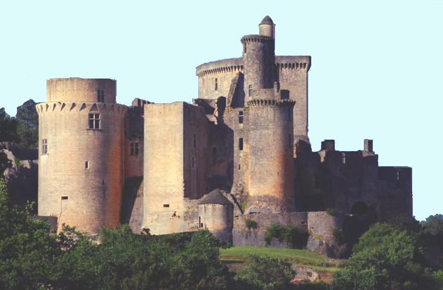

Le Moyen Âge s’étend du Ve au XVe siècle. Cette époque est marquée par les ch'teaux forts, les seigneurs, les paysans et les chevaliers. La vie quotidienne était organisée autour de la féodalité, un système de relations entre suzerains et vassaux.
Les ch'teaux forts protégeaient les seigneurs et leurs sujets en cas d’attaque. Ils étaient construits sur des hauteurs pour surveiller les alentours.
Les chevaliers étaient des guerriers à cheval. Ils suivaient un code d’honneur appelé la chevalerie. Leur mission était de protéger leur seigneur et de participer aux batailles.
Quel élément était essentiel pour la protection des seigneurs au Moyen Âge ?